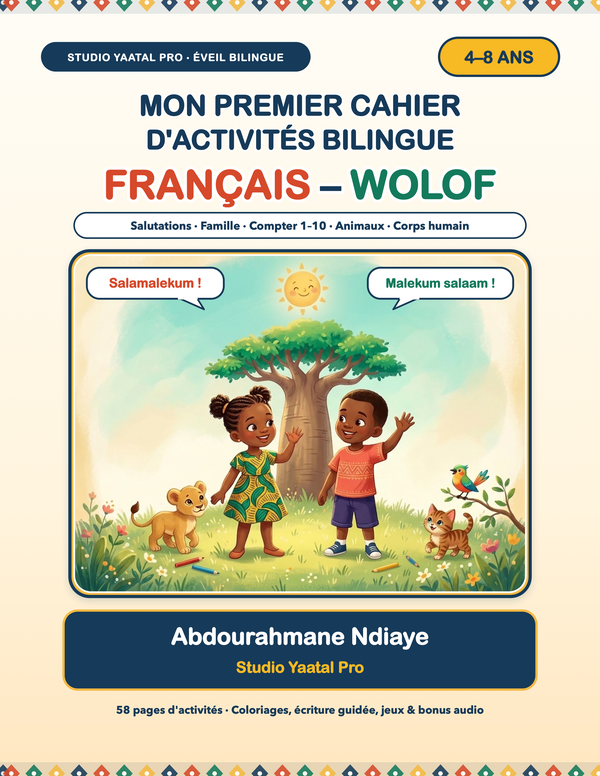

Dalal ak jàmm ! · Bienvenue dans votre espace lecteur
Mon Premier Cahier d'Activités Bilingue Français – Wolof
Pour les enfants de 4 à 8 ans, les parents et les grands-parents. Retrouvez ici votre Pack de 10 fiches bonus imprimables et le guide complet de prononciation wolof pour accompagner les 5 chapitres du livre.

Format 8,5 × 11 po · Coloriage & écriture N&B
Guide Audio & Clés de Prononciation Wolof
Sélectionnez un onglet ou recherchez un mot pour afficher le découpage syllabique et écouter l'audio.
Votre avis aide d'autres familles !
Si votre enfant prend plaisir à dire Salamalekum / Malekum salaam, à compter de Benn à Fukk ou à nommer sa famille en wolof, laissez quelques mots et étoiles sur Amazon. Chaque retour aide un projet indépendant de transmission culturelle.
Astuce rituel 5 minutes / jour
- Matin : « Naka suba si ? » au réveil et « Jërëjëf / Ñoo ko bokk » à table.
- En famille : Nommez toujours les proches avec « Sama... » (mon/ma).
- En marchant : Comptez les marches de Benn à Fukk (1 à 10).